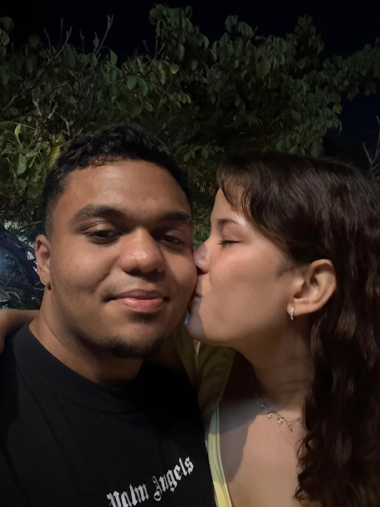
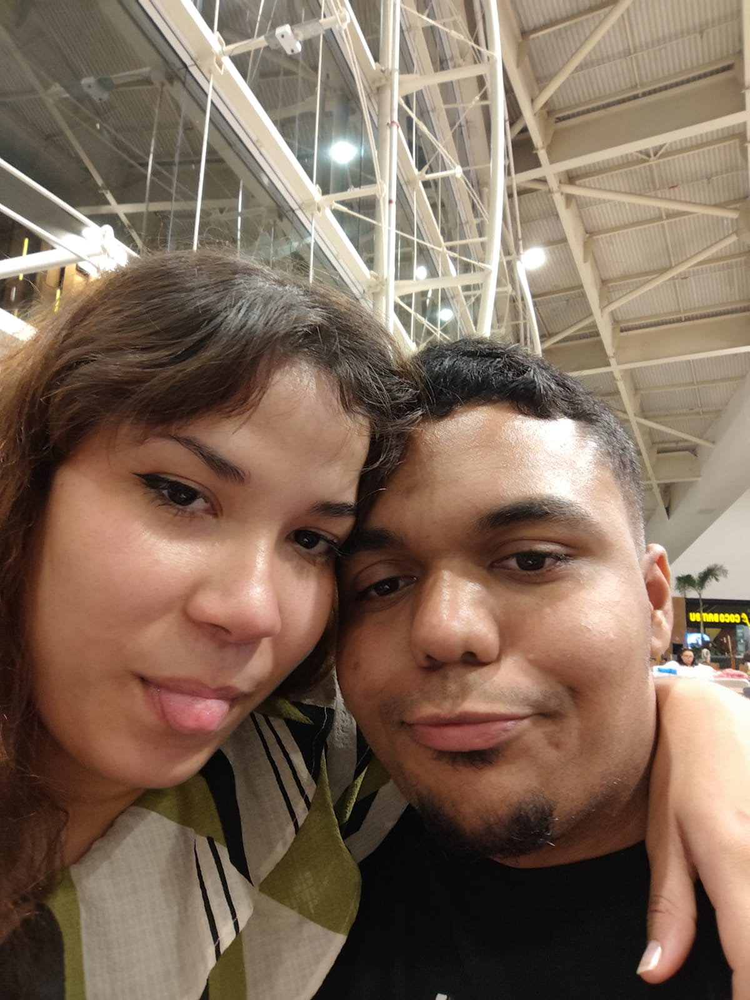

01 · O que você é para mim
Você é a pessoa mais preciosa da minha vida, a mulher mais maravilhosa da minha vida, a mais incrÃvel de todas.
Em qualquer dia
Todos os dias ao seu lado são incrÃveis.
Todos os dias ao seu lado são incrÃveis, mesmo em meio a brigas ou confusões eu sempre vou te amar, nunca vou parar de te amar.
“Eu sempre vou te amar, nunca vou parar de te amar.â€

02 · Nossos momentos juntos
Tudo eu amo e quero ter o máximo possÃvel
Todos os momentos da nossa vida até o momento, nossos encontros, nossos momentos juntos, nossos beijos, nossos abraços, tudo eu amo e quero ter o máximo possÃvel, eu nunca vou querer ficar longe de você meu amor.
01 / 05



03 · Cuidar de você
Ter você do meu lado é uma das melhores coisas de todas.
Poder te ver, te abraçar, conversar com você, cuidar de você, tudo isso eu quero fazer a todo tempo.
04 · Vai valer a pena
Para que a gente fique sempre juntinho.
Ter que ficar longe de você infelizmente é uma paciência que eu tenho que ter por muito tempo, mas vai valer a pena para que a gente fique sempre juntinho.


05 · O nosso sempre
Não perder um único segundo do seu lado.
Quero ter muito mais momentos do seu lado e poder aproveitar ao máximo esses momentos, não perder um único segundo de aproveitar do seu lado, futuramente construir uma famÃlia com você e viver ao seu lado sempre.
Para sempre seu
Adriano ♥
“Promessa selada: cada dia de espera só existe para nos levar à vida inteira que vamos construir juntos.â€